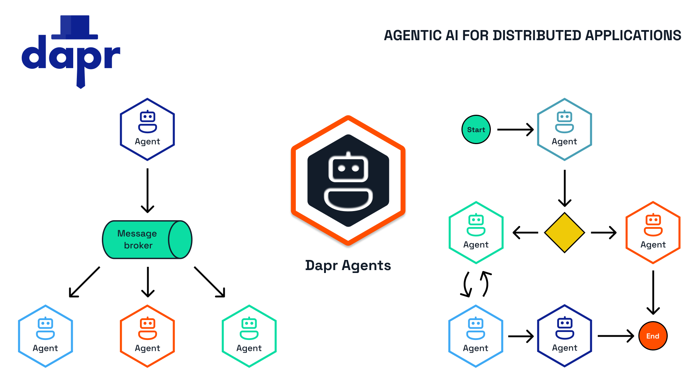

Dapr Agents: A Framework for Agentic AI Systems¶
Dapr Agents is a developer framework designed to build production-grade resilient AI agent systems that operate at scale. Built on top of the battle-tested Dapr project, it enables software developers to create AI agents that reason, act, and collaborate using Large Language Models (LLMs), while leveraging built-in observability and stateful workflow execution to guarantee agentic workflows complete successfully, no matter how complex.

Key Features¶
- Scale and Efficiency: Run thousands of agents efficiently on a single core. Dapr distributes single and multi-agent apps transparently across fleets of machines and handles their lifecycle.
- Workflow Resilience: Automatically retries agentic workflows and ensures task completion.
- Kubernetes-Native: Easily deploy and manage agents in Kubernetes environments.
- Data-Driven Agents: Directly integrate with databases, documents, and unstructured data by connecting to dozens of different data sources.
- Multi-Agent Systems: Secure and observable by default, enabling collaboration between agents.
- Vendor-Neutral & Open Source: Avoid vendor lock-in and gain flexibility across cloud and on-premises deployments.
- Platform-Ready: Built-in RBAC, access scopes and declarative resources enable platform teams to integrate Dapr agents into their systems.
Why Choose Dapr Agents?¶
Scalable Workflows as a First Class Citizen¶
Dapr Agents uses a durable-execution workflow engine that guarantees each agent task executes to completion in the face of network interruptions, node crashes and other types of disruptive failures. Developers do not need to know about the underlying concepts of the workflow engine - simply write an agent that performs any number of tasks and these will get automatically distributed across the cluster. If any task fails, it will be retried and recover its state from where it left off.
Cost-Effective AI Adoption¶
Dapr Agents builds on top of Dapr's Workflow API, which under the hood represents each agent as an actor, a single unit of compute and state that is thread-safe and natively distributed, lending itself well to an agentic Scale-To-Zero architecture. This minimizes infrastructure costs, making AI adoption accessible to everyone. The underlying virtual actor model allows thousands of agents to run on demand on a single core machine with double-digit millisecond latency when scaling from zero. When unused, the agents are reclaimed by the system but retain their state until the next time they are needed. With this design, there's no trade-off between performance and resource efficiency.
Data-Centric AI Agents¶
With built-in connectivity to over 50 enterprise data sources, Dapr Agents efficiently handles structured and unstructured data. From basic PDF extraction to large-scale database interactions, it enables seamless data-driven AI workflows with minimal code changes. Dapr's bindings and state stores, along with MCP support, provide access to a large number of data sources that can be used to ingest data to an agent.
Accelerated Development¶
Dapr Agents provides a set of AI features that give developers a complete API surface to tackle common problems. Some of these include:
- Multi-agent communications
- Structured outputs
- Multiple LLM providers
- Contextual memory
- Flexible prompting
- Intelligent tool selection
- MCP integration
Integrated Security and Reliability¶
By building on top of Dapr, platform and infrastructure teams can apply Dapr's resiliency policies to the database and/or message broker of their choice that are used by Dapr Agents. These policies include timeouts, retry/backoffs and circuit breakers. When it comes to security, Dapr provides the option to scope access to a given database or message broker to one or more agentic app deployments. In addition, Dapr Agents uses mTLS to encrypt the communication layer of its underlying components.
Built-in Messaging and State Infrastructure¶
- 🎯 Service-to-Service Invocation: Facilitates direct communication between agents with built-in service discovery, error handling, and distributed tracing. Agents can leverage this for synchronous messaging in multi-agent workflows.
- ⚡️ Publish and Subscribe: Supports loosely coupled collaboration between agents through a shared message bus. This enables real-time, event-driven interactions critical for task distribution and coordination.
- 🔄 Durable Workflow: Defines long-running, persistent workflows that combine deterministic processes with LLM-based decision-making. Dapr Agents uses this to orchestrate complex multi-step agentic workflows seamlessly.
- 🧠 State Management: Provides a flexible key-value store for agents to retain context across interactions, ensuring continuity and adaptability during workflows.
- 🤖 Actors: Implements the Virtual Actor pattern, allowing agents to operate as self-contained, stateful units that handle messages sequentially. This eliminates concurrency concerns and enhances scalability in agentic systems.
Vendor-Neutral and Open Source¶
As a part of CNCF, Dapr Agents is vendor-neutral, eliminating concerns about lock-in, intellectual property risks, or proprietary restrictions. Organizations gain full flexibility and control over their AI applications using open-source software they can audit and contribute to.
Getting Started¶
-
Set up in 2 minutes
Install
Dapr Agentswithpipand set up your Dapr environment in minutes -
Start experimenting
Build your first agent and design a custom workflow to get started with Dapr Agents.
-
Learn more
Learn more about Dapr Agents and its main components!